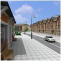

Инвестиционно-управляющая компания «Снотра-Инвест»представляет новый поселок малоэтажной застройки и таунхаузов «Токкари-Лэнд»
Новый малоэтажный комплекс в предместьях Санкт-Петербурга расположился в живописной холмистой местности Всеволожского района всего в 7км. от КАД.
Концепция поселка - уникальна для Петеррбурга: мы предлагаем Вам возможность почувствовать всю прелесть и очарование спокойной загородной жизни, радость от общения с природой среди невероятно красивых пейзажей, не отказываясь от привычного городского комфорта и ритма жизни.
Расположение коттеджного поселка: недалеко от Санкт-Петербурга, Ленинградская область, Всеволожский район, Колтушская волость вблизи населенных пунктов Колтуши, Коркино, Канисты, Тавры и Вирки. Коттеджи Петербурга в стиле Шале предназначены для круглогодичного проживания. Земельные участки без подряда со всеми коммуникациями для постоянного проживания. Коттеджный поселок в СПБ включает в себя застройку из двухэтажных коттеджей общей площадью от 139 до 274 кв.м. и подразделяются на 4 типа. А также возможно строительство дома по собственному проекту. В 800 метрах от поселка находятся Коркинские озера.
Для людей со вкусом, кто ценит в загородном доме добротность, удобство и функциональность, подойдет дом в альпийском стиле. Строительство загородного дома или коттеджа для современного человека - обычно способ уйти от городской суеты и отдохнуть душой и телом. Просторное помещение для отдыха, большая кухня - мечта человека, страдающего от непрерывных стрессов большого города.